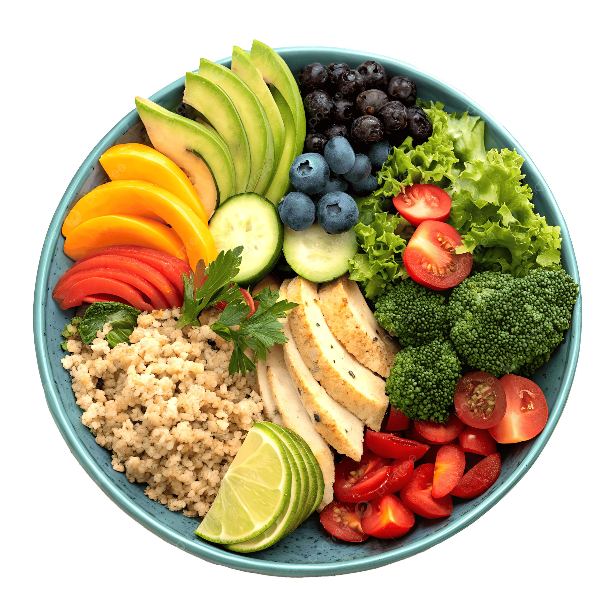
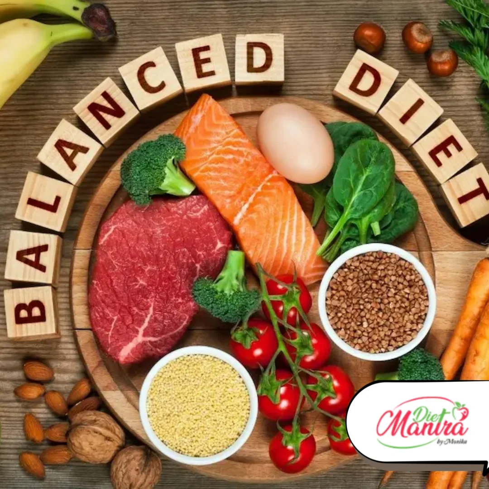
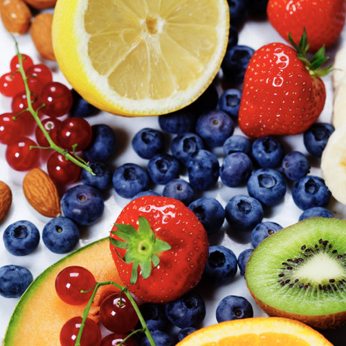
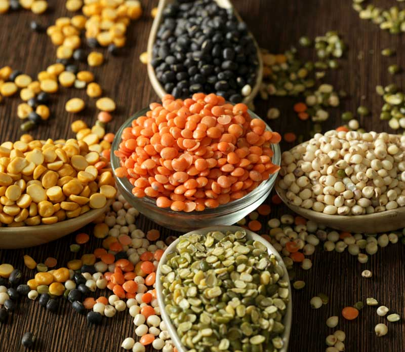
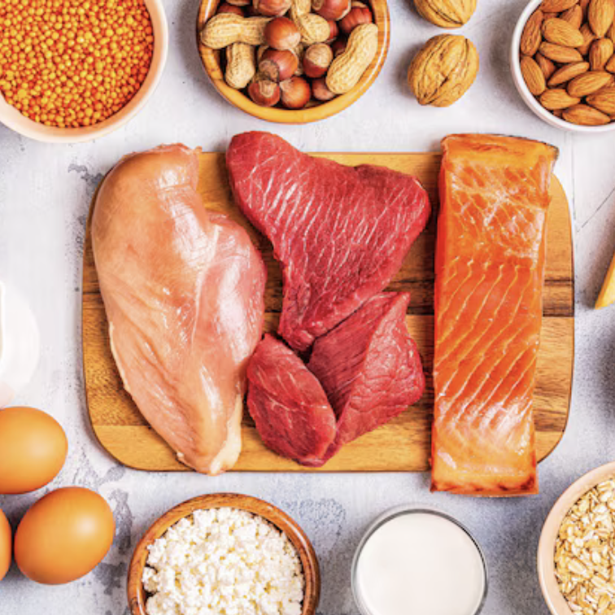

DIET

Fuel Your Body with Smart Nutrition
A balanced diet is essential for maintaining energy, supporting your body, and improving overall health. At Thrive, we focus on simple and sustainable eating habits that help you feel your best every day. By choosing nutritious foods and building healthy routines, you can strengthen both your body and mind.
Healthy nutrition is not about strict diets, but about creating balance and making better choices every day. Eating fresh and nutritious foods can improve focus, boost energy, and support a healthier lifestyle.




Recipes


10 min
Fruitsalad

20 min
Green Godess salad

10 min
Tropical nice cream

30 min
Protein buns